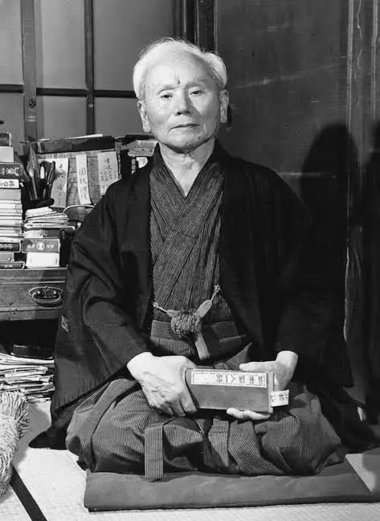

Aurora Miranda Muñoz y Maria Ximena Vazques Morales 2 AM PRG
Karate (del japonés "mano vacía") es un arte marcial originario de Okinawa que se enfoca en la defensa personal. Combina técnicas de golpeo (puños, codos, rodillas y pies) con bloqueos. Más allá del combate, busca el equilibrio físico, mental y espiritual.
El Shotokan es uno de los estilos de karate más practicados en el mundo. Fue desarrollado por Gichin Funakoshi y se caracteriza por sus posturas largas, técnicas potentes y un fuerte enfoque en la disciplina y el desarrollo del carácter.
Los grados en karate se identifican mediante diferentes colores de cinturón, representando el avance del practicante.
En el año 2026 se van a realizar bastantes torneos, en meses previos se llevaron acabo los torneos nacionales de cada pais para poder participar y obtener la seleccion nacional su pais, ya que en octubre de 2026 se llevara acabo el torneo mundial de la ISKF (Internacional Shotokan Karate Federation), que se llevara acabo en Merida, Yucatan, Mexico. Los dias del 22 al 25 de octubre.
| OCTUBRE 2026 | ||||||
|---|---|---|---|---|---|---|
| Dom | Lun | Mar | Mié | Jue | Vie | Sáb |
| 1 | 2 | 3 | ||||
| 4 | 5 | 6 | 7 | 8 | 9 | 10 |
| 11 | 12 | 13 | 14 | 15 | 16 | 17 |
| 18 | 19 | 20 | 21 | 22 | 23 | 24 |
| 25 | 26 | 27 | 28 | 29 | 30 | 31 |
| Jueves 22: seminario para cintas cafes y negras, junta de jueces y examenes, seminario para principiantes y cena para representantes internacionales | ||||||
| Viernes 23: examenes de Dan, torneo cintas verdes y moradas | ||||||
| Sabado 24: ceremonia de apertura, torneo para mayores de edad (categorias menores de 18), torneos cintas cafe (29 categorias) | ||||||
| Domingo 25: torneo para cinturones negros, torneos de equipos, cena y fiesta final. | ||||||
Gichin Funakoshi fue un maestro japonés de Karate. Conocido como el Padre del Karate Moderno o Karate-Do por su labor de difusión del mismo en las islas principales de Japón y por ser el fundador del Karate-Do estilo Shotokan, junto a su hijo Yoshitaka Funakoshi.

Pagina Oficial de la ISKF
Gracias por su atención